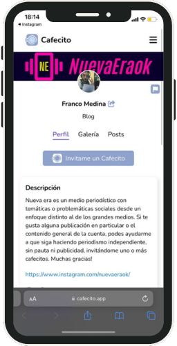

Cafecitos

El sosten de Nueva Era son sus seguidores y lectores, si te gusta el contenido de la cuenta o
alguna publicaciones, podes ayudarme con uno o más cafecitos para seguir haciendo periodismo
independiente y más humano.
Ahora, ¿qué es un cafecito? "Cafecito" es un app donde las personas pueden donar dinero para ayudar a una persona o entiedad a seguir creciendo, los cafecitos son simbolicos y cada uno tiene un valor de $100, se puede donar uno o cuentos quieras.
Este tipo de actividad es de gran ayuda para medios independientes como Nueva Era, ya que no contamos con el resplado economico de grandes empresas o patrocinadores y esto, de cierta manera, es lo que nos permite seguir creando un periodismo independiente y libre.
Ahora, ¿qué es un cafecito? "Cafecito" es un app donde las personas pueden donar dinero para ayudar a una persona o entiedad a seguir creciendo, los cafecitos son simbolicos y cada uno tiene un valor de $100, se puede donar uno o cuentos quieras.
Este tipo de actividad es de gran ayuda para medios independientes como Nueva Era, ya que no contamos con el resplado economico de grandes empresas o patrocinadores y esto, de cierta manera, es lo que nos permite seguir creando un periodismo independiente y libre.
¿Queres saber como donar?
A continuación te dejamos un tutorial